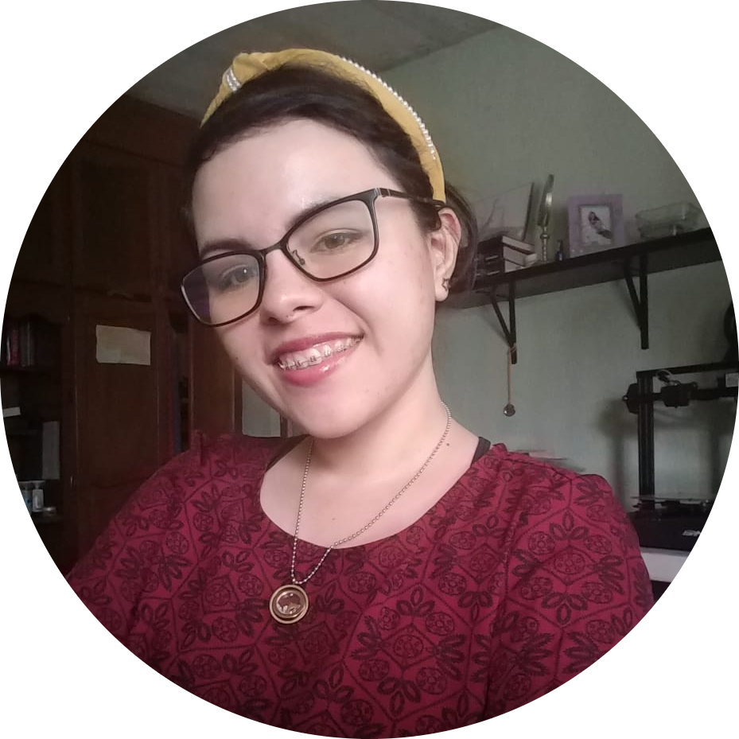
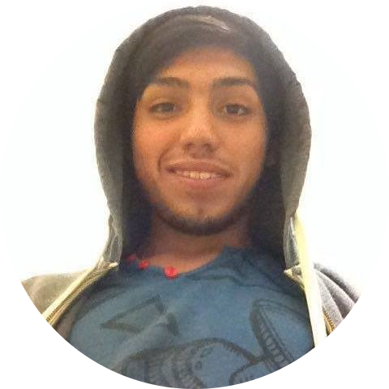

Mario Valdes
Mario Luis Valdés licenciado en informática originario de la ciudad de México me gusta jugar videojuegos y estar con mi familia.
ENLACES
GitHub
LinkedIn
COMIDA FAVORITA
Pizza
Sushi
Tacos
CANCIÓN FAVORITA
No hay nadie mas
Camina siempre adelante
El viaje
PELÍCULA FAVORITA
Desafio
Contacto Sangriento
Voces inocentes
Lilia Rabago

Lilia Rabago es una ingeniera mecatronica originaria de México. Le gusta tocar la guitarra y subir a la bicicleta estacionaria. Actualmente está haciendo una capacitación en Generation México.
ENLACES
GitHub
LinkedIn
COMIDA FAVORITA
Ramen
Tacos
Nachos
CANCIÓN FAVORITA
Deja que salga la luna
Luz de luna
Un Velero llamado libertad
PELÍCULA FAVORITA
Spiderman 1
Spiderman 2
Spiderman 3
Fernando Moriel
Fernando Ramírez Moriel, Lic. en Mercadotecnia, Lic. en Finanzas, originario de ciudad Delicias, Chihuahua. me gusta leer y jugar videojuegos.
ENLACES
GitHub
LinkedIn
COMIDA FAVORITA
Sushi
Carne asada
Pizza
CANCIÓN FAVORITA
i´ve been waiting - lil peep
fall out boy, nemo - nightwish
while your lips are still red - nightwish
PELÍCULA FAVORITA
Logan
Leap year
Ps i love you
Julio Xochimitl

Estudio en la Universidad Autónoma de la Ciudad de México (UACM) la Licenciatura en Ingeniería de Software, me gusta escuchar música, producir música, diseñar y coleccionar figuras, y juguetes.
ENLACES
GitHub
LinkedIn
COMIDA FAVORITA
Enmoladas
Pozole
Tacos de Carnitas
CANCIÓN FAVORITA
AC13 ft. King Deepfield - Tell No Soul
Chime & Panda Eyes - White Magic
Delta Heavy x MUZZ - Higher Ground
PELÍCULA FAVORITA
Cómo entrenar a tu dragón 2
Kung Fu Panda 2
The Warriors